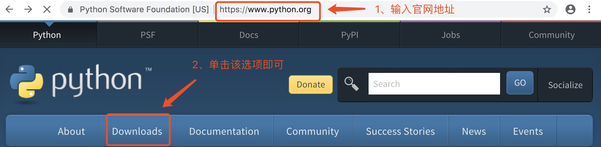
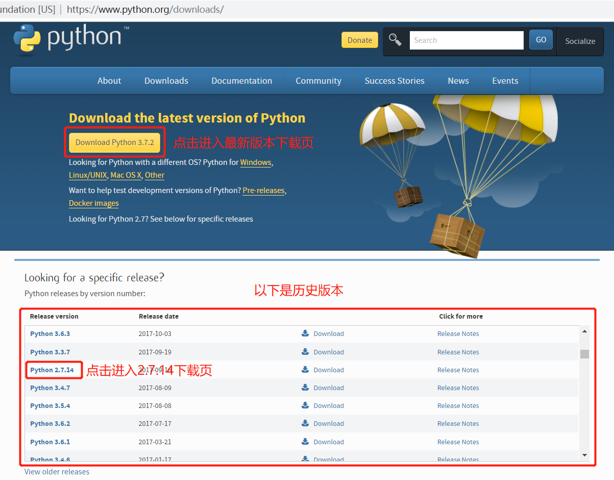
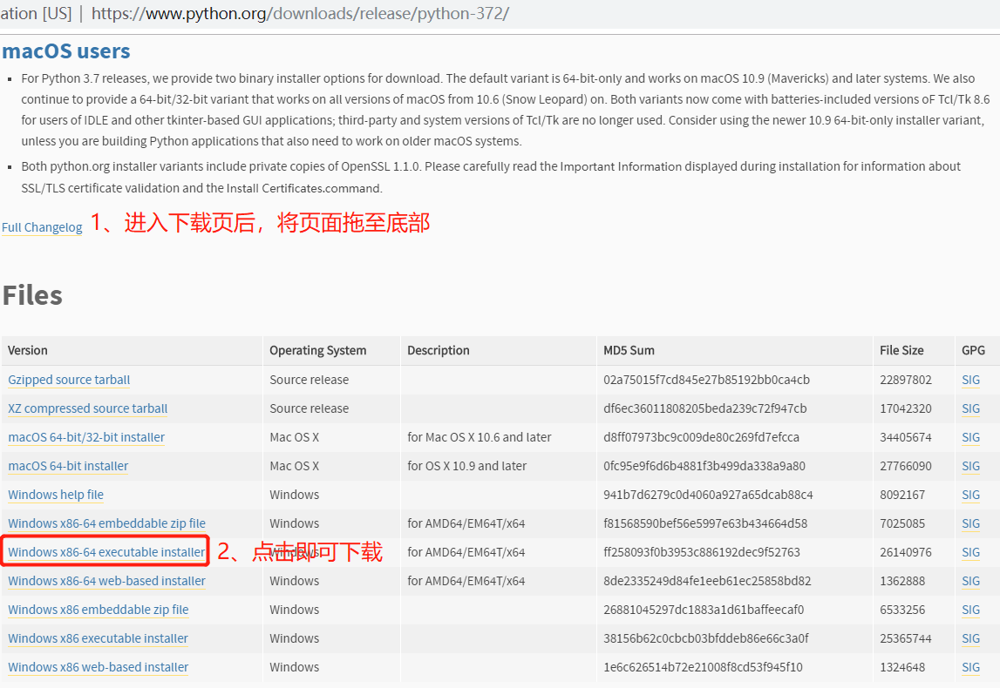
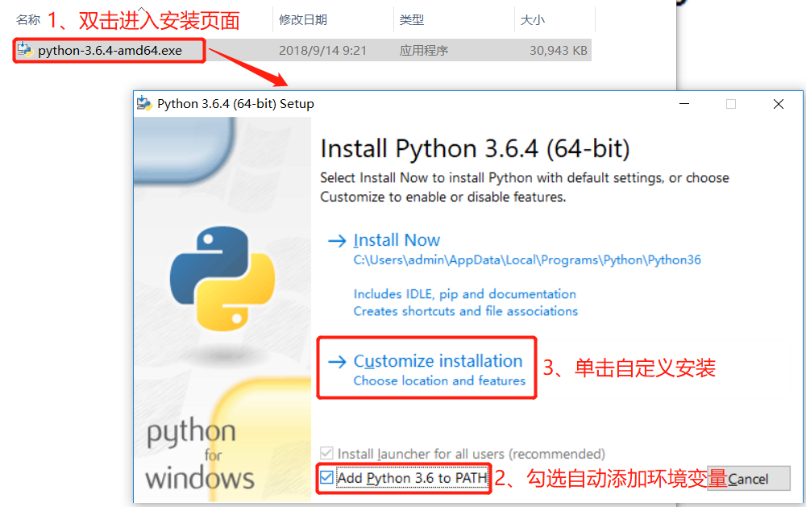
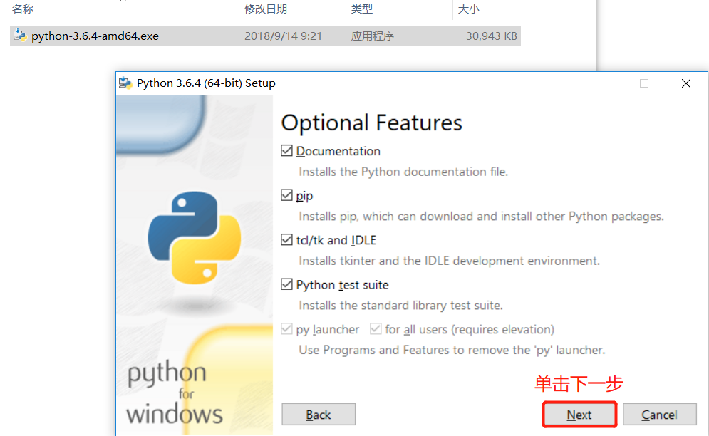
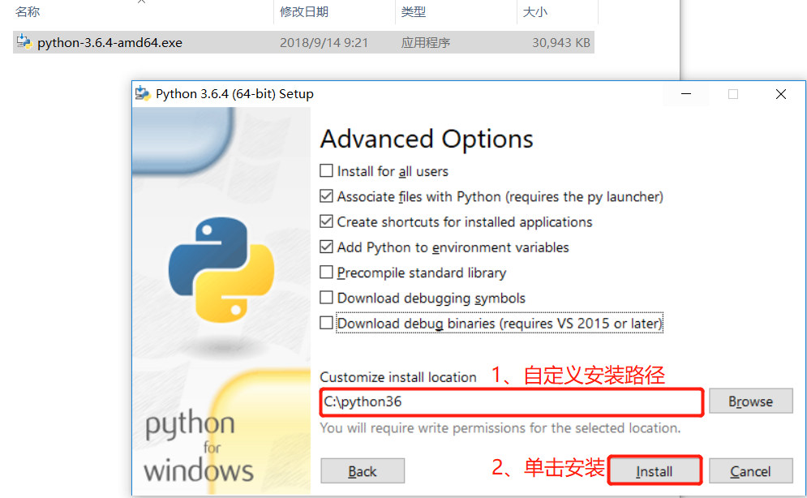
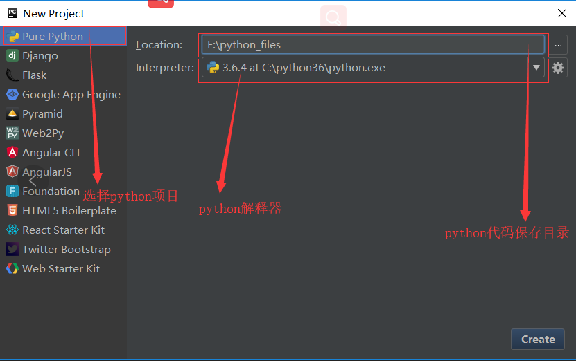
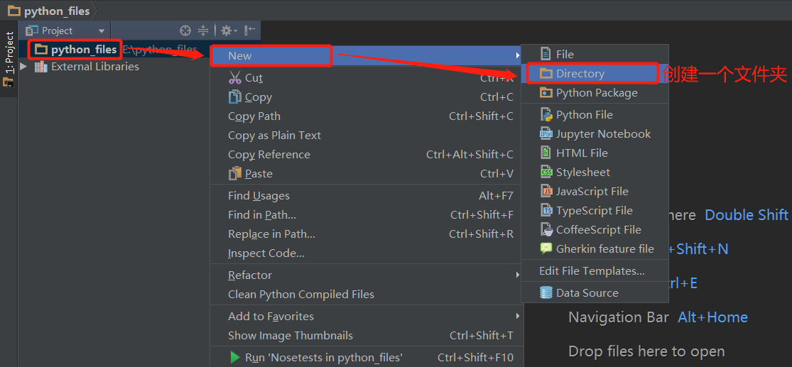
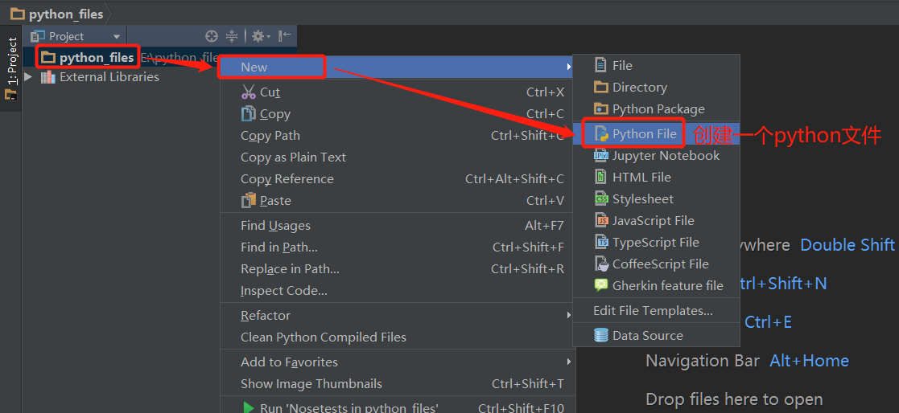

python编译器的安装和pycharm的安装原文出处:本文由博客园博主小小小小小小小小小白提供。
原文连接:https://www.cnblogs.com/aheng/p/11754307.html
python编译器的安装



安装python编译器



pychram安装
安装完成后注册，然后启动，会让你先创建一个项目，其实就是一个文件夹，我们以后的代码都存在这里面。

创建python文件夹（里面放你的项目文件）

创建python文件开始编写python

这就是本篇我所说的内容，如果对你有帮助，点点支持，谢谢。